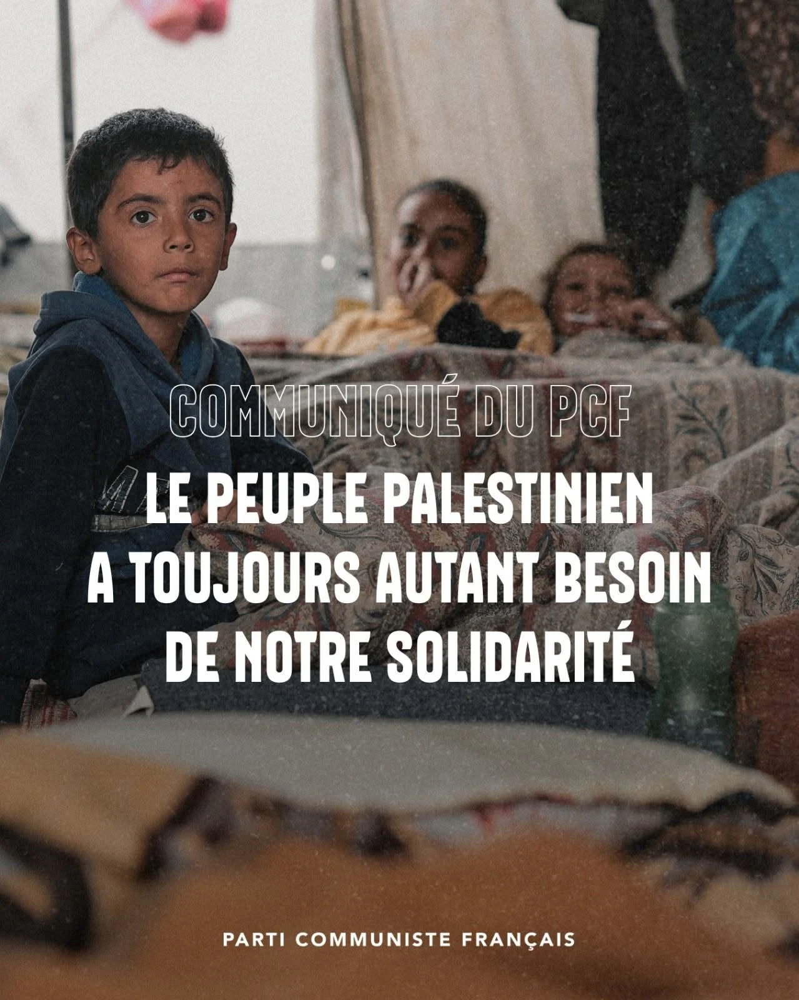

Publication relayée par le PCF 79
Le PCF dénonce la poursuite de la guerre contre le peuple palestinien
Date de mise à jour indiquée par Facebook · 28 janvier 2026
Texte de la publication · PCF national et PCF Monde
Le PCF dénonce la poursuite de la guerre et des crimes contre le peuple palestinien, avec la complicité de l’administration Trump et le silence de la communauté internationale.
Blocus de Gaza, répression en Cisjordanie, attaques contre l’UNRWA : la fuite en avant du gouvernement Netanyahou se poursuit.
Le PCF réaffirme sa solidarité avec l’OLP et appelle la France à agir pour une paix juste : protection internationale, sanctions, libération des prisonniers politiques et reconnaissance pleine de l’État de Palestine.
Nous appelons à participer sur ces bases aux mobilisations prévues en France ces prochains jours et à Paris le samedi 31 janvier à 14h Place de la République.
Retrouvez le communiqué complet en commentaires.

Sources
PCF national et PCF Monde · publication relayée par le PCF 79 · bibliothèque Facebook · AR-0002-FB-00890
À lire aussi · Déclaration commune de l’OLP et du PCF sur les droits du peuple palestinien